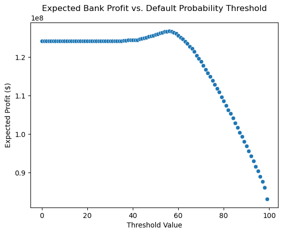

import pandas as pd
import matplotlib.pyplot as plt
import seaborn as sns
url = "https://raw.githubusercontent.com/PhilChodrow/ml-notes/main/data/credit-risk/train.csv"
df_train = pd.read_csv(url)Intro
In this blog post, we’re addressing two aspects of the credit lending decision process. Firstly, we seek to find a score function and a threshold. which help to maximize the total expected profit for a hypothetical bank from their lending decisions. We’re exploring various features in the dataset. Secondly, we examine how credit lending affects different groups of prospective borrowers, in the process shedding light on patterns or biases that emerge between the various groups asking for loans from the bank.
PART A: Grab the Data
df_train| person_age | person_income | person_home_ownership | person_emp_length | loan_intent | loan_grade | loan_amnt | loan_int_rate | loan_status | loan_percent_income | cb_person_default_on_file | cb_person_cred_hist_length | |
|---|---|---|---|---|---|---|---|---|---|---|---|---|
| 0 | 25 | 43200 | RENT | NaN | VENTURE | B | 1200 | 9.91 | 0 | 0.03 | N | 4 |
| 1 | 27 | 98000 | RENT | 3.0 | EDUCATION | C | 11750 | 13.47 | 0 | 0.12 | Y | 6 |
| 2 | 22 | 36996 | RENT | 5.0 | EDUCATION | A | 10000 | 7.51 | 0 | 0.27 | N | 4 |
| 3 | 24 | 26000 | RENT | 2.0 | MEDICAL | C | 1325 | 12.87 | 1 | 0.05 | N | 4 |
| 4 | 29 | 53004 | MORTGAGE | 2.0 | HOMEIMPROVEMENT | A | 15000 | 9.63 | 0 | 0.28 | N | 10 |
| ... | ... | ... | ... | ... | ... | ... | ... | ... | ... | ... | ... | ... |
| 26059 | 36 | 150000 | MORTGAGE | 8.0 | EDUCATION | A | 3000 | 7.29 | 0 | 0.02 | N | 17 |
| 26060 | 23 | 48000 | RENT | 1.0 | VENTURE | A | 4325 | 5.42 | 0 | 0.09 | N | 4 |
| 26061 | 22 | 60000 | RENT | 0.0 | MEDICAL | B | 15000 | 11.71 | 0 | 0.25 | N | 4 |
| 26062 | 30 | 144000 | MORTGAGE | 12.0 | PERSONAL | C | 35000 | 12.68 | 0 | 0.24 | N | 8 |
| 26063 | 25 | 60000 | RENT | 5.0 | EDUCATION | A | 21450 | 7.29 | 1 | 0.36 | N | 4 |
26064 rows × 12 columns
PART B: Explore the Data
Summary Tables:
# Income bins
bins = [0, 50000, 100000, 200000, float('inf')]
# Labels for bins
labels = ['0-50k', '50k-100k', '100k-200k', '200k+']
# New column in data frame: https://pandas.pydata.org/pandas-docs/stable/reference/api/pandas.cut.html
df_train['income_bins'] = pd.cut(df_train['person_income'], bins=bins, labels=labels, right=False)
# Group by the income bins and calculate the mean loan amount for each category
summary_table = df_train.groupby('income_bins', observed=True).agg({'loan_amnt': 'mean', 'cb_person_cred_hist_length': 'mean'}).reset_index()
summary_table.columns = ["Income Bins", "Mean Loan Amnt", "Mean Credit History Length"]
summary_table2 = df_train.groupby('person_home_ownership').agg({'loan_amnt': 'mean', 'loan_int_rate': 'mean', 'cb_person_cred_hist_length': 'mean' }).reset_index()
summary_table2.columns = ["Person Home Ownership", "Mean Loan Amount", "Mean Interest Rate", "Mean Credit History Length"]summary_table| Income Bins | Mean Loan Amnt | Mean Credit History Length | |
|---|---|---|---|
| 0 | 0-50k | 7026.580284 | 5.551688 |
| 1 | 50k-100k | 10464.931791 | 5.777665 |
| 2 | 100k-200k | 13681.890377 | 6.323887 |
| 3 | 200k+ | 17331.845238 | 8.364286 |
The summary table above demonstrates how a person’s income level affects the loan amount a borrower has access to as well as the average length of credit a borrower is offered.
summary_table2| Person Home Ownership | Mean Loan Amount | Mean Interest Rate | Mean Credit History Length | |
|---|---|---|---|---|
| 0 | MORTGAGE | 10562.137462 | 10.491245 | 5.930430 |
| 1 | OTHER | 11235.795455 | 12.059221 | 5.465909 |
| 2 | OWN | 8978.912626 | 10.850169 | 5.834854 |
| 3 | RENT | 8843.507973 | 11.448571 | 5.679575 |
The summary table above shows how a person’s home ownership relates to the amount of money a borrower asks for as well as the interest rate they are offered.
Data Visualizations
# Graph setup
plt.figure(figsize=(12, 20))
# Modify dataset to remove datapoints with person_age > 90 and person_employment_length > 40
mod_df_train = df_train[df_train['person_age'] < 40]
mod_df_train = mod_df_train[mod_df_train['person_emp_length'] < 40]
plt.subplot(3, 1, 1, title="Box Plot: Age vs. Loan Intent")
sns.boxplot(x= "loan_intent", y= "person_age", data= mod_df_train)
#plt.subplot(3, 1, 2, title="Scatter Plot: Interest Rate vs. Employment Length")
#sns.scatterplot(x= 'person_home_ownership', y= 'person_income', hue= 'cb_person_default_on_file', data= df_train)
#sns.barplot(x= 'person_home_ownership', y= 'person_income', hue= 'cb_person_default_on_file', data= df_train)
#Medical_Education_Venture = ["MEDICAL", "EDUCATION", "VENTURE"]
Medical_Education_Venture = ["MEDICAL", "EDUCATION"]
mod_df_train = mod_df_train[mod_df_train['person_income'] < 60000]
filtered_df = mod_df_train[mod_df_train['loan_intent'].isin(Medical_Education_Venture)]
plt.subplot(3, 1, 2, title="Scatter Plot: Interest Rate vs. Person Income")
sns.scatterplot(x= 'person_income', y= 'loan_int_rate', hue= 'cb_person_default_on_file', data= filtered_df)
#sns.scatterplot(x= 'person_income', y= 'loan_int_rate', style= 'cb_person_default_on_file', hue= 'loan_intent' , data= filtered_df)
plt.tight_layout()
plt.show()The first visualization is a box plot showing the distribution of a borrower’s ages based on their loan intent. Those seeking education and venture loans tend to be younger as evidenced by lower median age.
The second visualization attempts to see if there is correlation between a person’s income and the interest rates they are offered, which doesn’t seem the case based on the plot.
Part C: Build a Model
We will be using the Logistic Regression model from Scikit-learn on the data.
# Code comes from: https://scikit-learn.org/stable/auto_examples/feature_selection/plot_select_from_model_diabetes.html#sphx-glr-auto-examples-feature-selection-plot-select-from-model-diabetes-py
from sklearn.linear_model import LogisticRegression
import numpy as npHere, we can prepare the training data to ensure the loan status (target variable) and loan grade (off limits) are excluded.
# Function borrowed from Palmer's Penguins Blog Post
def prepare_data(df):
df = df.dropna()
y = df["loan_status"]
df = df.drop(["loan_status", "loan_grade"], axis = 1)
df = pd.get_dummies(df)
return df, y
X_train, y_train = prepare_data(df_train)
X_train| person_age | person_income | person_emp_length | loan_amnt | loan_int_rate | loan_percent_income | cb_person_cred_hist_length | person_home_ownership_MORTGAGE | person_home_ownership_OTHER | person_home_ownership_OWN | ... | loan_intent_HOMEIMPROVEMENT | loan_intent_MEDICAL | loan_intent_PERSONAL | loan_intent_VENTURE | cb_person_default_on_file_N | cb_person_default_on_file_Y | income_bins_0-50k | income_bins_50k-100k | income_bins_100k-200k | income_bins_200k+ | |
|---|---|---|---|---|---|---|---|---|---|---|---|---|---|---|---|---|---|---|---|---|---|
| 1 | 27 | 98000 | 3.0 | 11750 | 13.47 | 0.12 | 6 | False | False | False | ... | False | False | False | False | False | True | False | True | False | False |
| 2 | 22 | 36996 | 5.0 | 10000 | 7.51 | 0.27 | 4 | False | False | False | ... | False | False | False | False | True | False | True | False | False | False |
| 3 | 24 | 26000 | 2.0 | 1325 | 12.87 | 0.05 | 4 | False | False | False | ... | False | True | False | False | True | False | True | False | False | False |
| 4 | 29 | 53004 | 2.0 | 15000 | 9.63 | 0.28 | 10 | True | False | False | ... | True | False | False | False | True | False | False | True | False | False |
| 6 | 21 | 21700 | 2.0 | 5500 | 14.91 | 0.25 | 2 | False | False | False | ... | True | False | False | False | True | False | True | False | False | False |
| ... | ... | ... | ... | ... | ... | ... | ... | ... | ... | ... | ... | ... | ... | ... | ... | ... | ... | ... | ... | ... | ... |
| 26059 | 36 | 150000 | 8.0 | 3000 | 7.29 | 0.02 | 17 | True | False | False | ... | False | False | False | False | True | False | False | False | True | False |
| 26060 | 23 | 48000 | 1.0 | 4325 | 5.42 | 0.09 | 4 | False | False | False | ... | False | False | False | True | True | False | True | False | False | False |
| 26061 | 22 | 60000 | 0.0 | 15000 | 11.71 | 0.25 | 4 | False | False | False | ... | False | True | False | False | True | False | False | True | False | False |
| 26062 | 30 | 144000 | 12.0 | 35000 | 12.68 | 0.24 | 8 | True | False | False | ... | False | False | True | False | True | False | False | False | True | False |
| 26063 | 25 | 60000 | 5.0 | 21450 | 7.29 | 0.36 | 4 | False | False | False | ... | False | False | False | False | True | False | False | True | False | False |
22907 rows × 23 columns
Here we initialize our Logistic Regression model and fit the data using all the features except loan status and loan grade. Coef stores the weight vector after the model is fitted to the data.
Features = X_train.columns
LR = LogisticRegression(max_iter = 1000)
LR.fit(X_train[Features], y_train)
coef = LR.coef_coefarray([[-6.36233054e-08, -4.05736687e-05, -2.49216925e-08,
1.06558107e-04, 9.49858736e-08, 2.54996489e-09,
-1.22515609e-08, -6.57170241e-09, 5.82454059e-11,
-3.93935422e-09, 8.07259852e-09, 2.68001147e-09,
-3.01883199e-09, 1.83915195e-09, 1.33270702e-09,
-1.41426495e-09, -3.79898622e-09, -9.65226805e-09,
7.27205534e-09, 4.32561287e-10, -4.19442658e-09,
9.25957463e-10, 4.55695125e-10]])Here we can see the weight vector and with each value representing a weight that corresponds to a particular feature.
Before we find the threshold, we make some simplified modeling assumptions, particularly about how the bank makes or loses money on a loan. Using the model.predict_proba, we can determine, for each borrower, the probability that their loan status value is 0. Call that probability “Default Prob” and make it a new column in our dataframe.
Next, we create two more new columns that hold the bank’s profit should the borrower repay or default on the loan, call those “Repay Profit” and “Default Profit”.
import numpy as np
total_profits = []
train_probs = LR.predict_proba(X_train[Features])
# This is the probability that the borrower will NOT default
# It's the probability that the value is 0, which means no default
X_train["Default Prob"] = train_probs[:, 0]
# loan_int_rate is a percentage so need to divide by 100
X_train["loan_int_rate"] = X_train["loan_int_rate"] / 100
# Calculate repayment and default profits
X_train["Repay Profit"] = X_train["loan_amnt"] * (1 + 0.25 * X_train["loan_int_rate"])**10 - X_train["loan_amnt"]
X_train["Default Profit"] = X_train["loan_amnt"] * (1 + 0.25 * X_train["loan_int_rate"])**3 - (1.7 * X_train["loan_amnt"])Part D: Find a Threshold
We then can use a helper function to calculate the profit for all the borrowers in the data set, given a certain threshold. The function creates a “Default Unlikely” column which is a 1 if the borrower is predicted to repay the loan, based on the predict_proba from earlier. The column “Correct Assumption” is a 1 if the model predicts the borrower will repay the loan and they do or that the borrower will default on their loan and they do.
Iterating through every threshold from 1 to 100, we can determine which threshold yields the highest total profit (sum the profit of each borrower). Dividing by the number of borrowers gives us the average profit per person.
def calc_profit(df, y, threshold):
# Create temporary dataframe to store results
#temp_df = df.copy()
temp_df = df
# Default Unlikely is if the person's probability is greater than the threshold
temp_df["Default Unlikely"] = (temp_df["Default Prob"] > threshold).astype(int)
# Correct Assumption is if the bank gives them a loan and they don't default
temp_df["Correct Assumption"] = (temp_df["Default Unlikely"] == y).astype(int)
# ASK ABOUT THIS
temp_df["Total Profit"] = temp_df["Correct Assumption"] * temp_df["Repay Profit"] - (1 - temp_df["Correct Assumption"]) * temp_df["Default Profit"]
# Return total profit for this threshold
return temp_df["Total Profit"].sum()
# Iterating through threshold values
thresholds = np.linspace(0, 1, 100)
max_profit = 0
optimal_threshold = 0
for threshold in thresholds:
total_profit = calc_profit(X_train, y_train, threshold)
total_profits.append(total_profit)
# Update max_profit and optimal_threshold if total_profit is higher
if total_profit > max_profit:
max_profit = total_profit
optimal_threshold = threshold
print("Optimal Threshold:", optimal_threshold)
print("Max Profit:", max_profit)
print("Profit per Person: ", max_profit / len(X_train))Optimal Threshold: 0.5656565656565657
Max Profit: 126739142.43103035
Profit per Person: 5532.769128695611sns.scatterplot(data=total_profits)
plt.xlabel("Threshold Value")
plt.ylabel("Expected Profit ($)")
plt.title("Expected Bank Profit vs. Default Probability Threshold")
plt.show()
Here we can visualize the maximum profit generated given a threshold value between 0 and 100. The global maximum for expected profit comes when the threshold for risking loans to borrowers is around 0.56.
Part E: Evaluate your Model from the Bank’s Perspective
url = "https://raw.githubusercontent.com/PhilChodrow/ml-notes/main/data/credit-risk/test.csv"
df_test = pd.read_csv(url)Prepare the test data and linear regression model, same as before with the training data.
X_test, y_test = prepare_data(df_test)
TestFeatures = X_test.columns
LRE = LogisticRegression(max_iter = 1000)
LRE.fit(X_test[TestFeatures], y_test)LogisticRegression(max_iter=1000)In a Jupyter environment, please rerun this cell to show the HTML representation or trust the notebook.
On GitHub, the HTML representation is unable to render, please try loading this page with nbviewer.org.
LogisticRegression(max_iter=1000)
test_probs = LRE.predict_proba(X_test[TestFeatures])
X_test["Default Prob"] = test_probs[:, 0]
# loan_int_rate is a percentage so need to divide by 100
X_test["loan_int_rate"] = X_test["loan_int_rate"] / 100
# Calculate repayment and default profits
X_test["Repay Profit"] = X_test["loan_amnt"] * (1 + 0.25 * X_test["loan_int_rate"])**10 - X_test["loan_amnt"]
X_test["Default Profit"] = X_test["loan_amnt"] * (1 + 0.25 * X_test["loan_int_rate"])**3 - 1.7 * X_test["loan_amnt"]
test_total_profits = []Use the calc_profit function with the optimal threshold calculated earlier that resulted in the highest expected profit.
test_threshold = optimal_threshold
total_test_profit = calc_profit(X_test, y_test, test_threshold)
print(f"Expected profit with test data: {total_test_profit:.2f}")
print("Profit per Person: ", total_test_profit / len(X_test))Expected profit with test data: 31972199.40
Profit per Person: 5578.816856325797X_test| person_age | person_income | person_emp_length | loan_amnt | loan_int_rate | loan_percent_income | cb_person_cred_hist_length | person_home_ownership_MORTGAGE | person_home_ownership_OTHER | person_home_ownership_OWN | ... | loan_intent_VENTURE | cb_person_default_on_file_N | cb_person_default_on_file_Y | Default Prob | Repay Profit | Default Profit | Default Unlikely | Correct Assumption | Total Profit | age_bins | |
|---|---|---|---|---|---|---|---|---|---|---|---|---|---|---|---|---|---|---|---|---|---|
| 0 | 21 | 42000 | 5.0 | 1000 | 0.1558 | 0.02 | 4 | False | False | False | ... | True | True | False | 0.829020 | 465.367227 | -578.539601 | 1 | 1 | 465.367227 | 20-30 |
| 1 | 32 | 51000 | 2.0 | 15000 | 0.1136 | 0.29 | 9 | True | False | False | ... | False | True | False | 0.603650 | 4847.780062 | -9185.361205 | 1 | 0 | 9185.361205 | 30-40 |
| 2 | 35 | 54084 | 2.0 | 3000 | 0.1261 | 0.06 | 6 | False | False | False | ... | False | True | False | 0.863782 | 1091.841800 | -1807.236578 | 1 | 0 | 1807.236578 | 30-40 |
| 3 | 28 | 66300 | 11.0 | 12000 | 0.1411 | 0.15 | 6 | True | False | False | ... | False | True | False | 0.795915 | 4972.214553 | -7084.777554 | 1 | 1 | 4972.214553 | 20-30 |
| 4 | 22 | 70550 | 0.0 | 7000 | 0.1588 | 0.08 | 3 | False | False | False | ... | False | True | False | 0.888388 | 3331.859215 | -4032.764115 | 1 | 1 | 3331.859215 | 20-30 |
| ... | ... | ... | ... | ... | ... | ... | ... | ... | ... | ... | ... | ... | ... | ... | ... | ... | ... | ... | ... | ... | ... |
| 6511 | 29 | 78000 | 2.0 | 18000 | 0.0662 | 0.23 | 5 | True | False | False | ... | False | True | False | 0.764900 | 3210.941787 | -11691.427669 | 1 | 0 | 11691.427669 | 20-30 |
| 6513 | 27 | 44640 | 0.0 | 12800 | 0.1183 | 0.29 | 9 | False | False | False | ... | False | True | False | 0.599646 | 4331.281644 | -7790.401145 | 1 | 0 | 7790.401145 | 20-30 |
| 6514 | 24 | 48000 | 5.0 | 10400 | 0.0737 | 0.22 | 3 | False | False | True | ... | True | True | False | 0.689860 | 2083.140437 | -6694.483153 | 1 | 0 | 6694.483153 | 20-30 |
| 6515 | 26 | 65000 | 6.0 | 6000 | 0.0907 | 0.09 | 3 | True | False | False | ... | False | True | False | 0.876529 | 1508.058449 | -3782.525248 | 1 | 0 | 3782.525248 | 20-30 |
| 6516 | 29 | 61000 | 12.0 | 10000 | 0.1607 | 0.16 | 9 | False | False | False | ... | True | True | False | 0.796590 | 4827.369675 | -5745.680644 | 1 | 0 | 5745.680644 | 20-30 |
5731 rows × 26 columns
Let’s see where ths expected profit using the testing data measures up on our graph of expected profits from the training data.
# Scale the test_threshold data point accordingly
test_threshold = test_threshold * 100
sns.scatterplot(data=total_profits)
plt.scatter(y=total_test_profit, x=test_threshold, color="red")
plt.xlabel("Threshold Value")
plt.ylabel("Expected Profit ($)")
plt.title("Expected Bank Profit vs. Default Probability Threshold")
plt.show()The red dot is the expected profit from the test data using the optimal threshold from the model on the training data. There is a significant difference between the expected profits of the training and test data at this threshold.
Part F: Evaluate your Model from the Borrower’s Perspective
Is it more difficult for people in certain age groups to access credit under your proposed system?
# Income bins
bins = [0, 20, 30, 40, 50, 60, 70, 80, float('inf')]
# Labels for bins
labels = ['0-20', '20-30', '30-40', '40-50', '50-60', '60-70', '70-80', '80+']
# New column in data frame: https://pandas.pydata.org/pandas-docs/stable/reference/api/pandas.cut.html
X_test['age_bins'] = pd.cut(X_test['person_age'], bins=bins, labels=labels, right=False)
# Group by the income bins and calculate the mean loan amount for each category
summary_table3 = X_test.groupby('age_bins', observed=True).agg({'Default Unlikely': 'mean'}).reset_index()
summary_table3.columns = ["Age Bins", "Avg Prob of Repay"]
summary_table3| Age Bins | Avg Prob of Repay | |
|---|---|---|
| 0 | 20-30 | 0.868872 |
| 1 | 30-40 | 0.890895 |
| 2 | 40-50 | 0.903846 |
| 3 | 50-60 | 0.904762 |
| 4 | 60-70 | 0.750000 |
| 5 | 70-80 | 1.000000 |
After grouping the borrowers into age brackets, we can see that a borrower in the youngest age bracket (20 to 30 years old) is least likely to repay a loan offered by the bank.
Is it more difficult for people to get loans in order to pay for medical expenses? How does this compare with the actual rate of default in that group?
summary_table4 = X_test.groupby(["loan_intent_VENTURE", "loan_intent_MEDICAL", "loan_intent_EDUCATION", "loan_intent_DEBTCONSOLIDATION", "loan_intent_HOMEIMPROVEMENT"]).agg({"Default Unlikely":"mean"})
summary_table4| Default Unlikely | |||||
|---|---|---|---|---|---|
| loan_intent_VENTURE | loan_intent_MEDICAL | loan_intent_EDUCATION | loan_intent_DEBTCONSOLIDATION | loan_intent_HOMEIMPROVEMENT | |
| False | False | False | False | False | 0.875752 |
| True | 0.920455 | ||||
| True | False | 0.871681 | |||
| True | False | False | 0.865646 | ||
| True | False | False | False | 0.853681 | |
| True | False | False | False | False | 0.885892 |
As shown by the summary table above, we can see that it is not significantly more difficult for people to get loans to pay for medical expenses versus other types of loan intent, using the average “Default Likely” value which is an expression of how likely the bank is to offer a loan.
We can filter the test data to only include borrowers with medical loan intents.
# Create a data frame with the individuals with medical loan intent
#Medical_analysis = X_test[X_test["loan_intent_MEDICAL"]]Let’s first take a look at the proportion of borrowers seeking medical loans that are considered trustworthy by the model, and are therefore given the loan.
#summary_table7 = Medical_analysis.groupby("Default Unlikely").agg({"Default Unlikely":"count", "Default Prob":"mean"})
#summary_table7.columns = ["Count", "Avg Default Prob"]
#summary_table7
# Filtering for people who were given loans based on model and threshold
given_loans = X_test[X_test["Default Unlikely"] == 1]
summary_table5 = given_loans.groupby(["loan_intent_VENTURE", "loan_intent_MEDICAL", "loan_intent_EDUCATION", "loan_intent_DEBTCONSOLIDATION", "loan_intent_HOMEIMPROVEMENT"]).agg({"Correct Assumption":"count"})
summary_table5| Correct Assumption | |||||
|---|---|---|---|---|---|
| loan_intent_VENTURE | loan_intent_MEDICAL | loan_intent_EDUCATION | loan_intent_DEBTCONSOLIDATION | loan_intent_HOMEIMPROVEMENT | |
| False | False | False | False | False | 874 |
| True | 567 | ||||
| True | False | 788 | |||
| True | False | False | 1018 | ||
| True | False | False | False | 916 | |
| True | False | False | False | False | 854 |
But we only want to see the borrowers considered likely to repay, and therefore offered a loan from the bank.
# Filtering for people who were given loans based on the model
PredDefaultMedical = Medical_analysis[Medical_analysis["Default Unlikely"] == 1]Of the borrowers considered likely to repay, and therefore offered a loan, we can see how many repaid or defaulted.
# Filter for people who were predicted to repay but defaulted
#ActualDefaultMedical = PredDefaultMedical[PredDefaultMedical["Correct Assumption"] == 0]
# Generate summary table to show number of borrowers with
#summary_table4 = PredDefaultMedical.groupby("Correct Assumption").agg({'Default Unlikely': 'count'})
summary_table4 = PredDefaultMedical.groupby("Correct Assumption").agg({"Correct Assumption": "count"})
summary_table4.columns = ["Count"]
summary_table4| Count | |
|---|---|
| Correct Assumption | |
| 0 | 741 |
| 1 | 175 |
Of the 916 borrower’s the model indicated for the bank to loan to, 741 defaulted, a nearly 80% default rate. Therefore, it is relatively easy for borrowers to receive a loan for medical reasons but it is highly probable they will default on that loan.
What about people seeking loans for business ventures or education? How does a person’s income level impact the ease with which they can access credit under your decision system?
Similar to before, we can filter for borrowers with intents to take loans out for business ventures.
Venture = X_train[X_train['loan_intent_VENTURE']].copy()| person_age | person_income | person_emp_length | loan_amnt | loan_int_rate | loan_percent_income | cb_person_cred_hist_length | person_home_ownership_MORTGAGE | person_home_ownership_OTHER | person_home_ownership_OWN | ... | income_bins_0-50k | income_bins_50k-100k | income_bins_100k-200k | income_bins_200k+ | Default Prob | Repay Profit | Default Profit | Default Unlikely | Correct Assumption | Total Profit | |
|---|---|---|---|---|---|---|---|---|---|---|---|---|---|---|---|---|---|---|---|---|---|
| 8 | 36 | 59004 | 11.0 | 10000 | 0.0751 | 0.17 | 15 | True | False | False | ... | False | True | False | False | 0.790581 | 2044.334031 | -6426.108799 | 0 | 1 | 2044.334031 |
| 10 | 22 | 33640 | 4.0 | 12000 | 0.1065 | 0.36 | 3 | True | False | False | ... | True | False | False | False | 0.521537 | 3606.287541 | -7415.753447 | 0 | 1 | 3606.287541 |
| 18 | 34 | 62000 | 5.0 | 12000 | 0.1099 | 0.19 | 6 | False | False | False | ... | False | True | False | False | 0.775019 | 3735.983172 | -7383.475595 | 0 | 1 | 3735.983172 |
| 21 | 23 | 65000 | 0.0 | 7300 | 0.0999 | 0.11 | 3 | True | False | False | ... | False | True | False | False | 0.865229 | 2042.338248 | -4549.273641 | 0 | 1 | 2042.338248 |
| 29 | 27 | 33000 | 7.0 | 4800 | 0.1065 | 0.15 | 10 | True | False | False | ... | True | False | False | False | 0.695816 | 1442.515017 | -2966.301379 | 0 | 1 | 1442.515017 |
| ... | ... | ... | ... | ... | ... | ... | ... | ... | ... | ... | ... | ... | ... | ... | ... | ... | ... | ... | ... | ... | ... |
| 26031 | 25 | 30000 | 0.0 | 12000 | 0.1148 | 0.40 | 4 | False | False | False | ... | True | False | False | False | 0.484633 | 3924.604107 | -7336.863481 | 0 | 0 | 7336.863481 |
| 26037 | 21 | 35000 | 6.0 | 10000 | 0.0766 | 0.29 | 3 | False | False | False | ... | True | False | False | False | 0.587708 | 2088.741422 | -6414.428098 | 0 | 1 | 2088.741422 |
| 26049 | 42 | 66500 | 8.0 | 6000 | 0.1025 | 0.09 | 15 | False | False | False | ... | False | True | False | False | 0.886834 | 1727.468339 | -3726.829510 | 0 | 1 | 1727.468339 |
| 26056 | 24 | 42000 | 1.0 | 7500 | 0.1051 | 0.18 | 3 | False | False | True | ... | True | False | False | False | 0.711957 | 2220.727300 | -4643.143001 | 0 | 1 | 2220.727300 |
| 26060 | 23 | 48000 | 1.0 | 4325 | 0.0542 | 0.09 | 4 | False | False | False | ... | True | False | False | False | 0.815578 | 623.093432 | -2849.295748 | 0 | 1 | 623.093432 |
4037 rows × 29 columns
Like in Part A, we group the incomes into bins in order to understand how a person’s income level might impact the accessibility to credit. We can borrow some of the necessary code from earlier.
# Income bins
bins = [0, 50000, 100000, 200000, float('inf')]
# Labels for bins
labels = ['0-50k', '50k-100k', '100k-200k', '200k+']
# New column in data frame: https://pandas.pydata.org/pandas-docs/stable/reference/api/pandas.cut.html
Venture['income_bins'] = pd.cut(Venture['person_income'], bins=bins, labels=labels, right=False)
summary_table5 = Venture.groupby('income_bins', observed=True).agg({'loan_amnt': 'mean', 'Default Prob': 'mean'}).reset_index()
summary_table5.columns = ["Income Bins", "Mean Loan Amnt", 'Mean Default Prob']
summary_table5| Income Bins | Mean Loan Amnt | Mean Default Prob | |
|---|---|---|---|
| 0 | 0-50k | 7110.743034 | 0.647473 |
| 1 | 50k-100k | 10320.122951 | 0.820480 |
| 2 | 100k-200k | 13556.037736 | 0.960362 |
| 3 | 200k+ | 17455.241935 | 0.999000 |
As evidenced in the summary table, the higher a borrower’s income the more likely they are to receive a probability well above the threshold and thus offered a loan.
Now, let’s do a similar analysis but for people who intend to use their loans for educational purposes.
Education = X_train[X_train['loan_intent_EDUCATION']].copy()| person_age | person_income | person_emp_length | loan_amnt | loan_int_rate | loan_percent_income | cb_person_cred_hist_length | person_home_ownership_MORTGAGE | person_home_ownership_OTHER | person_home_ownership_OWN | ... | income_bins_0-50k | income_bins_50k-100k | income_bins_100k-200k | income_bins_200k+ | Default Prob | Repay Profit | Default Profit | Default Unlikely | Correct Assumption | Total Profit | |
|---|---|---|---|---|---|---|---|---|---|---|---|---|---|---|---|---|---|---|---|---|---|
| 1 | 27 | 98000 | 3.0 | 11750 | 0.1347 | 0.12 | 6 | False | False | False | ... | False | True | False | False | 0.938437 | 4613.567568 | -6997.533847 | 0 | 1 | 4613.567568 |
| 2 | 22 | 36996 | 5.0 | 10000 | 0.0751 | 0.27 | 4 | False | False | False | ... | True | False | False | False | 0.607182 | 2044.334031 | -6426.108799 | 0 | 1 | 2044.334031 |
| 16 | 26 | 88500 | 10.0 | 10000 | 0.0859 | 0.11 | 4 | True | False | False | ... | False | True | False | False | 0.925889 | 2367.371880 | -6341.815694 | 0 | 1 | 2367.371880 |
| 22 | 37 | 85000 | 3.0 | 10000 | 0.1427 | 0.12 | 14 | False | False | False | ... | False | True | False | False | 0.915536 | 4198.253635 | -5891.114794 | 0 | 1 | 4198.253635 |
| 27 | 22 | 53000 | 2.0 | 6500 | 0.1065 | 0.12 | 4 | False | False | False | ... | False | True | False | False | 0.811192 | 1953.405752 | -4016.866450 | 0 | 1 | 1953.405752 |
| ... | ... | ... | ... | ... | ... | ... | ... | ... | ... | ... | ... | ... | ... | ... | ... | ... | ... | ... | ... | ... | ... |
| 26043 | 29 | 48000 | 5.0 | 10000 | 0.1273 | 0.21 | 7 | True | False | False | ... | True | False | False | False | 0.707227 | 3679.192509 | -6014.542748 | 0 | 1 | 3679.192509 |
| 26045 | 40 | 136000 | 5.0 | 21000 | 0.0999 | 0.15 | 13 | True | False | False | ... | False | False | True | False | 0.963747 | 5875.219617 | -13086.951569 | 0 | 1 | 5875.219617 |
| 26053 | 24 | 110000 | 1.0 | 11200 | 0.0749 | 0.10 | 4 | False | False | False | ... | False | False | True | False | 0.963373 | 2283.035050 | -7198.985446 | 0 | 1 | 2283.035050 |
| 26059 | 36 | 150000 | 8.0 | 3000 | 0.0729 | 0.02 | 17 | True | False | False | ... | False | False | True | False | 0.996879 | 593.840622 | -1932.967484 | 0 | 1 | 593.840622 |
| 26063 | 25 | 60000 | 5.0 | 21450 | 0.0729 | 0.36 | 4 | False | False | False | ... | False | True | False | False | 0.537119 | 4245.960448 | -13820.717511 | 0 | 0 | 13820.717511 |
4528 rows × 29 columns
# New column in data frame: https://pandas.pydata.org/pandas-docs/stable/reference/api/pandas.cut.html
Education['income_bins'] = pd.cut(Education['person_income'], bins=bins, labels=labels, right=False)
summary_table6 = Education.groupby('income_bins', observed=True).agg({'loan_amnt': 'mean', 'Default Prob': 'mean'}).reset_index()
summary_table6.columns = ["Income Bins", "Mean Loan Amnt", 'Mean Default Prob']
summary_table6| Income Bins | Mean Loan Amnt | Mean Default Prob | |
|---|---|---|---|
| 0 | 0-50k | 6936.549946 | 0.658564 |
| 1 | 50k-100k | 10460.900815 | 0.815266 |
| 2 | 100k-200k | 13602.153558 | 0.955951 |
| 3 | 200k+ | 17583.076923 | 0.998853 |
The results among education borrowers is similar to the results from the venture borrowers. The higher a borrower’s income, the more likely they are to be viewed as likely to repay and offered a loan.
Part G: Write and Reflect
Considering that people seeking loans for medical expense have high rates of default, is it fair that it is more difficult for them to obtain access to credit?
Fairness in the context of machine learning refers to the idea that algorithmic decision-making processes should not systematically favor or disadvantage individuals or groups based on sensitive attributes such as race, gender, ethnicity, religion, or socioeconomic status. Fairness means ensuring that the outcomes of machine learning models are equitable and unbiased across different demographic groups, and thus promoting equality while minimizing discrimination.
If the difficulty in receiving credit for medical expenses is based on valid risk assessment, where individuals seeking such loans genuinely have a higher likelihood of default, then it could be considered fair. However, if the difficulty in accessing credit for medical expenses stems from systemic biases or discriminatory practices embedded in the lending process or the algorithms used to assess whether a person is creditworthy, then it would be considered unfair. In answering the previous questions, a strong correlation exists between a borrower’s income and the likelihood that the model offers them a loan.
In conclusion, this blog post looks at the credit-risk prediction problem that institutions like banks have to deal with. Models can be used to determine whether an individual is likely to repay a loan if offered one, but using profit as the gauge for a model’s success can effectively lead to systematic discrimination among certain demographics of people.